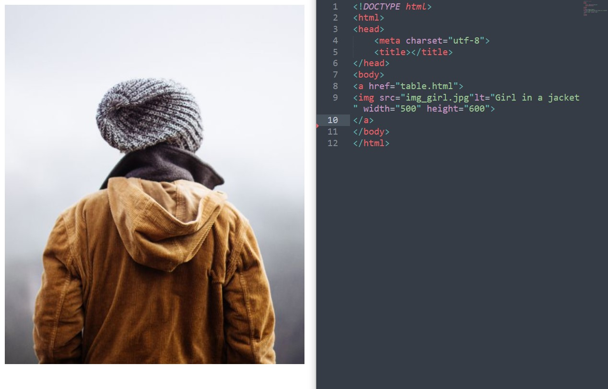
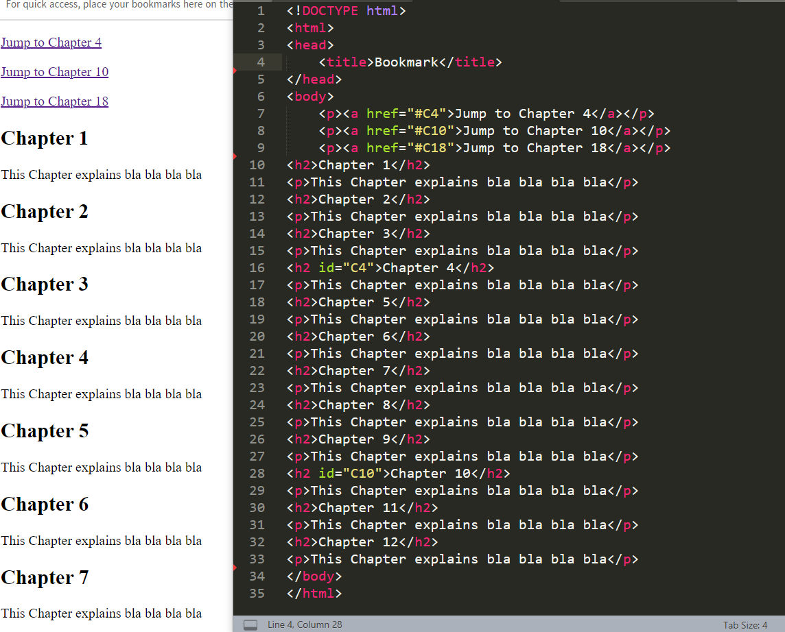

About < a >
To make a hyperlink in an HTML page, use <a> and <a> tags, a> tag defines <a> hyperlink, which is used to link from one page to another.
The most important attribute of the <a> element is the href attribute, which indicates the link’s destination.

Creating Bookmarks
- HTML links can be used to create bookmarks,so that readers can jump to
specific parts of a web page.
- Bookmarks can be useful if a web page is very long.
- To create a bookmark - first create the bookmark, then add a link to it.
- When the link is clicked, the page will scroll down or up to the location
with the bookmark.

The target attribute
- linked page will be displayed in the current browser window.
- target attribute specifies where to open the linked document
- _self - Default. Opens the document in the same window/tab as it was clicked
- _blank - Opens the document in a new window or tab
- _parent - Opens the document in the parent frame
- _top - Opens the document in the full body of the window
- <a href="https://www.edusn.co.uk/" target="_blank">Visit Edusn</a>